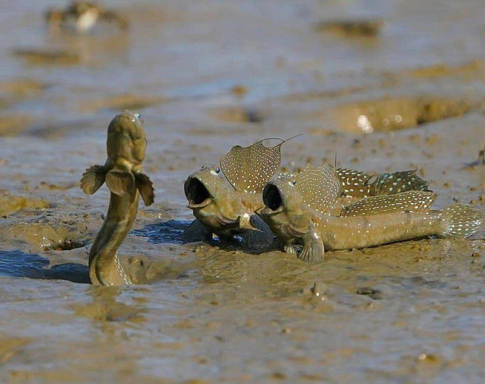

I like to think of myself as a creative. I've made stuff all my life. It started with dumb paper games mostly, pretty much just me making talisman boards that had cards baked into the squares. I loved that game as a kid. Still do! I love games, that's a thing. After my dumb talisman rip-offs, I farted around in game maker for years. Bounced super hard off of Unity and Unreal, then found Godot. Gods I love to develop with Godot! You should really check it out! if you're interested in game dev at all!
Tabletop stuff is my main bag lately. I like a whole lot of tabletop stuff. I've only just started to really learn HTML, along with some CSS. (Haven't deployed that much here, though... Soon!)
I actually got invested in this stuff from playing Hypnospace Outlaw, which if you're here and haven't played that game, you absolutely should.
I love video games, and any form of interactive media. I love to make these forms of media. I love to geek out about these forms of media. I think each piece of media, regardless of quality, has some kinda lesson to teach. I think that we like media that we want to stick around and listen to.
I love music! I listen to lots of weird, eclectic music that doesn't really make any sense. A few recomendations, in no specific order, with links:
What the fuck is a div?
Well, if I'm honest, and I am, I mostly just want my own little corner of the internet. I'm really tired of facebook and twitter and such. I played Hypnospace Outlaw and I really loved how personal all the pages felt. I started looking at geocities and I kept saying "Man, I really wish something like that still existed. Sad that the net is basically all bottled up and labeled now." Then I found this place!
I'll probably still post my games on Itch.io, but I also just wanna be able to ramble and talk about whatever. I want a blog that isn't wrapped up in all the stuff I don't want. I want a space I can control, and I want to make some cool like minded friends. Wanna play DnD with me, or something? Drop me a line at ethanlcooper12@gmail(DOT)com
